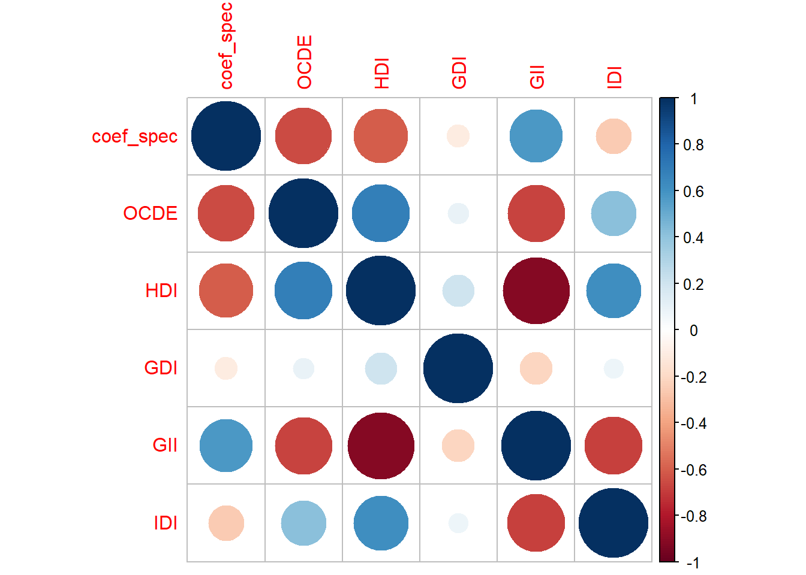

pacman::p_load(dplyr, haven, psych, purrr, tidyr, sjPlot, ggplot2, parameters, table1, beeswarm, lme4)
options(scipen = 999)
rm(list = ls())Diferencias de género a lo largo de países y variables país
pisa22ict <- readRDS("../input/proc_data/pisa22ict.rds")pisa22ict <- pisa22ict %>%
mutate(OCDE = if_else(CNT %in% c("AUS", "AUT", "BEL", "CHL", "CRI",
"CZE", "DNK", "EST", "FIN", "DEU", "GRC", "HUN", "ISL", "IRL", "ISR", "ITA", "JPN", "KOR", "LTU", "LVA", "POL", "SVK", "SVN", "ESP", "SWE", "CHE", "TUR", "GBR", "USA"), "TRUE", "FALSE"))pisa22ict <- pisa22ict %>%
mutate(sex = if_else(sex == 1, "Male", "Female"))# Crear modelos generales y específicos agrupados por código de país
modelo_effgen <- pisa22ict %>%
group_by(CNT) %>%
nest() %>%
mutate(modelo = map(data, ~lm(effgen ~ sex, data = .x)))
modelo_effspec <- pisa22ict %>%
group_by(CNT) %>%
nest() %>%
mutate(modelo = map(data, ~lm(effspec ~ sex, data = .x)))
# Extraer resúmenes individuales, manteniendo el CNT
modelo_effgen <- modelo_effgen %>%
mutate(summary = map(modelo, summary)) %>%
select(CNT, summary)
modelo_effspec <- modelo_effspec %>%
mutate(summary = map(modelo, summary)) %>%
select(CNT, summary)
# Crear nuevamente variable OCDE
modelo_effspec <- modelo_effspec %>%
mutate(OCDE = if_else(CNT %in% c("AUS", "AUT", "BEL", "CHL", "CRI", "CZE", "DNK", "EST", "FIN", "DEU", "GRC", "HUN", "ISL", "IRL", "ISR", "ITA", "JPN", "KOR", "LTU", "LVA", "POL", "SVK", "SVN", "ESP", "SWE", "CHE", "TUR", "GBR", "USA"), "TRUE", "FALSE"))
modelo_effgen <- modelo_effgen %>%
mutate(OCDE = if_else(CNT %in% c("AUS", "AUT", "BEL", "CHL", "CRI", "CZE", "DNK", "EST", "FIN", "DEU", "GRC", "HUN", "ISL", "IRL", "ISR", "ITA", "JPN", "KOR", "LTU", "LVA", "POL", "SVK", "SVN", "ESP", "SWE", "CHE", "TUR", "GBR", "USA"), "TRUE", "FALSE"))
# Crear un dataframe con las betas de los modelos
coef_data1 <- data.frame(
coef_gen = sapply(1:52, function(i) modelo_effgen[[2]][[i]][["coefficients"]][[2]]), Countrie = modelo_effgen [1], OCDE = modelo_effgen [3]
)
coef_data2 <- data.frame(
coef_spec = sapply(1:52, function(i) modelo_effspec[[2]][[i]][["coefficients"]][[2]]), Countrie = modelo_effspec [1], OCDE = modelo_effspec [3]
)# Cargar librería necesaria
library(DT)Warning: package 'DT' was built under R version 4.4.2# TABLA 1: coef_data1 (Modelo General)
datatable(coef_data1,
caption = "Coeficientes del Modelo General",
filter = 'top',
options = list(pageLength = 25))# TABLA 2: coef_data2 (Modelo Específico)
datatable(coef_data2,
caption = "Coeficientes del Modelo Específico",
filter = 'top',
options = list(pageLength = 25))beeswarm::beeswarm(coef_data1$coef_gen ~ coef_data1$OCDE,
horizontal=TRUE,
method="swarm",
col=c("#5f5758", "#fe3057"),
cex=1,
pch=18,
main= "Distribución de Coeficientes Autoeficacia general",
)beeswarm::beeswarm(coef_data2$coef_spec ~ coef_data2$OCDE,
horizontal=TRUE,
method="swarm",
col=c("#5f5758", "#fe3057"),
cex=1,
pch=18,
main= "Distribución de Coeficientes Autoeficacia Específica",
)library(readxl)Warning: package 'readxl' was built under R version 4.4.3HDI <- readxl::read_excel("../input/raw_data/index/HDI.xlsx")
GDI <- readxl::read_excel("../input/raw_data/index/GDI.xlsx")
GII <- readxl::read_excel("../input/raw_data/index/GII.xlsx")
IDI <- readxl::read_excel("../input/raw_data/index/IDI.xlsx")New names:
• `Individuals using the Internet (%)` -> `Individuals using the Internet
(%)...5`
• `` -> `...6`
• `Households with Internet access at home (%)` -> `Households with Internet
access at home (%)...7`
• `` -> `...8`
• `Active mobile-broadband subscriptions per 100 inhabitants` -> `Active
mobile-broadband subscriptions per 100 inhabitants...9`
• `` -> `...10`
• `` -> `...12`
• `` -> `...14`
• `Mobile broadband Internet traffic per subscription (GB)` -> `Mobile
broadband Internet traffic per subscription (GB)...15`
• `` -> `...16`
• `Fixed broadband Internet traffic per subscription (GB)` -> `Fixed broadband
Internet traffic per subscription (GB)...17`
• `` -> `...18`
• `Mobile data and voice high-consumption basket price (as % of GNI per
capita)` -> `Mobile data and voice high-consumption basket price (as % of GNI
per capita)...19`
• `` -> `...20`
• `Fixed-broadband Internet basket price (as % of GNI per capita)` ->
`Fixed-broadband Internet basket price (as % of GNI per capita)...21`
• `` -> `...22`
• `Individuals who own a mobile phone (%)` -> `Individuals who own a mobile
phone (%)...23`
• `` -> `...24`
• `` -> `...25`
• `Individuals using the Internet (%)` -> `Individuals using the Internet
(%)...26`
• `Households with Internet access at home (%)` -> `Households with Internet
access at home (%)...27`
• `Active mobile-broadband subscriptions per 100 inhabitants` -> `Active
mobile-broadband subscriptions per 100 inhabitants...28`
• `Mobile broadband Internet traffic per subscription (GB)` -> `Mobile
broadband Internet traffic per subscription (GB)...30`
• `Fixed broadband Internet traffic per subscription (GB)` -> `Fixed broadband
Internet traffic per subscription (GB)...31`
• `Mobile data and voice high-consumption basket price (as % of GNI per
capita)` -> `Mobile data and voice high-consumption basket price (as % of GNI
per capita)...32`
• `Fixed-broadband Internet basket price (as % of GNI per capita)` ->
`Fixed-broadband Internet basket price (as % of GNI per capita)...33`
• `Individuals who own a mobile phone (%)` -> `Individuals who own a mobile
phone (%)...34`
• `` -> `...35`country_codes <- unique(pisa22ict$CNT)
idi_filtered <- IDI %>%
filter(Iso3 %in% country_codes) %>%
select(IDI = `ICT Development Index (IDI)`, CNT = Iso3) %>%
slice(-1)
hdi_filtered <- HDI %>%
filter(countryIsoCode %in% country_codes) %>%
select(HDI = value, CNT = countryIsoCode)
gdi_filtered <- GDI %>%
filter(countryIsoCode %in% country_codes) %>%
select(CNT = countryIsoCode, GDI = value)
gii_filtered <- GII %>%
filter(countryIsoCode %in% country_codes) %>%
select(CNT = countryIsoCode, GII = value)
coef_data1 <- coef_data1 %>%
left_join(hdi_filtered, by = "CNT") %>%
left_join(gdi_filtered, by = "CNT") %>%
left_join(gii_filtered, by = "CNT") %>%
left_join(idi_filtered, by = "CNT")
coef_data2 <- coef_data2 %>%
left_join(hdi_filtered, by = "CNT") %>%
left_join(gdi_filtered, by = "CNT") %>%
left_join(gii_filtered, by = "CNT") %>%
left_join(idi_filtered, by = "CNT")Matriz de correlaciones índices y betas
library(corrplot)Warning: package 'corrplot' was built under R version 4.4.2corrplot 0.95 loadedcor_matrix_gen <- coef_data1 %>%
select(-CNT) %>%
mutate(OCDE = if_else(OCDE == "TRUE", 1, 0)) %>%
cor(use = "complete.obs")
corrplot(cor_matrix_gen, method = "circle")cor_matrix_spec <- coef_data2 %>%
select(-CNT) %>%
mutate(OCDE = if_else(OCDE == "TRUE", 1, 0)) %>%
cor(use = "complete.obs")
corrplot(cor_matrix_spec, method = "circle")